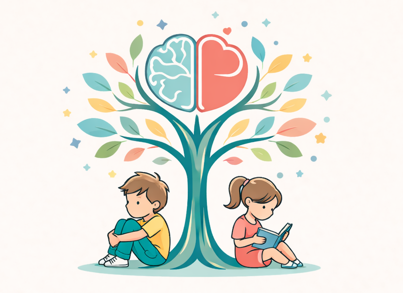

Terapia poznawczo-behawioralna i pomoc psychologiczna dla dzieci i młodzieży
Psycholog DiM - jestem psychologiem specjalizującym się w pracy z dziećmi i młodzieżą, w trakcie szkolenia podyplomowego z psychoterapii poznawczo-behawioralnej dzieci i młodzieży z elementami tzw. trzeciej fali (w tym terapii schematów). Posiadam również wykształcenie pedagogiczne, które wspiera mnie w kompleksowym rozumieniu potrzeb rozwojowych młodych osób. Oferuję profesjonalną pomoc psychologiczną, opartą na zaufaniu, empatii i indywidualnym podejściu do każdego dziecka. Systematycznie rozwijam swoje kompetencje zawodowe, uczestnicząc w specjalistycznych szkoleniach.
Prowadzę konsultacje psychologiczne oraz terapię indywidualną dzieci i młodzieży w nurcie poznawczo-behawioralnym (CBT) z elementami podejść trzeciej fali oraz terapii schematów. W swojej pracy wykorzystuję również elementy Terapii Skoncentrowanej na Rozwiązaniach (TSR), koncentrując się na zasobach i mocnych stronach dziecka. W pracy terapeutycznej opieram się przede wszystkim na nurcie poznawczo-behawioralnym, który zakłada ścisłą współpracę z dzieckiem i jego rodzicami, jasno określone cele terapii oraz dobór metod dostosowanych do wieku i możliwości rozwojowych młodej osoby. Szczególną wagę przykładam do psychoedukacji, rozwijania umiejętności regulacji emocji, pracy nad myślami, przekonaniami i samooceną oraz wzmacniania poczucia sprawczości. Pracuję pod superwizją grupową w ramach szkolenia podyplomowego
W celu umówienia spotkania lub zadania pytania, proszę o kontakt: Łucja Kubica Stec
Email: info@psycholog-dim.pl
Telefon:
Lokalizacja: Bielsko-Biała
Napisz, aby umówić konsultację